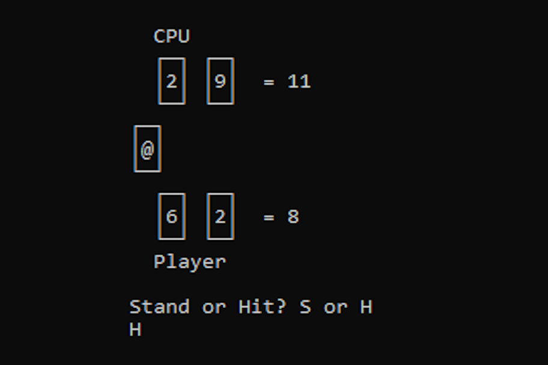

Who am I?

Hey, my name is Jamie Gorman, I'm a software developer from Birmingham, England. I've been interested in software development since I was a child, starting with actionscript as my first language at the age of 12. Nowadays, I prefer to use languages like C# and python, but I pride myself on my ability to work with any language. I Recently completed my bachelors degree in computer science, resulting in a first class honours and two additional awards. In my free time, I like to make my own games and simulations, some of which are listed below!
Projects Overview
Single Simulator

A parody of "Signal Simulator"-esque games - work as a new transfer to the signals department of an intergalatic dating website - matching up aliens on dates.
Juris-Civilis

An automatic world simulator with world generation and AI nations.
Tauresium

A multiplayer online game website, inwhich players create custom nations and compete with one another to take over the world.
:C
A lightweight custom programming language designed to be simple yet expansive.
Bankbot

A basic chatbot AI using stackoverflow questions to categorise user inputs into various finance related topics.